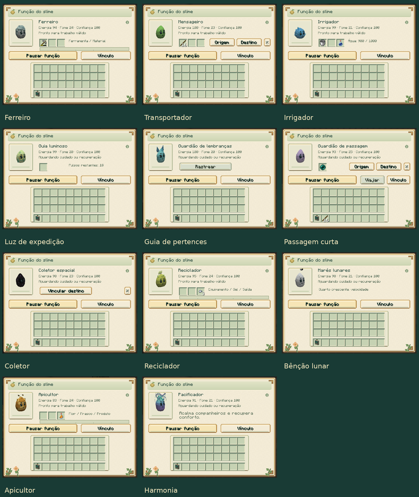

Slime Evolution 0.12.0
Atualizações por versão · Guia do mod
Arenas naturais e exploração
As estruturas recebem arquitetura maior e mais detalhada, com arcos, colunatas, passarelas, jardins, iluminação e materiais próprios. A nova Corte Real se junta ao Santuário Elemental, Caverna Cristalina, Câmara Ancestral, Lago Gelatinoso e Ruínas de Pesquisadores.

As quatro arenas de bosses nascem sem boss e têm um altar central. Use a Coroa, Braseiro, Sigilo ou Selo correspondente para iniciar a luta. O altar fica reservado durante o encontro e pode ser reutilizado após a vitória. Quebra, construção e alterações indiretas por explosões, líquidos, fogo, pistões, dispensadores e criaturas não modificam as arenas, inclusive em Criativo. A proteção e a reserva da luta persistem no mundo.
As novas construções aparecem em chunks novos. Baús continuam finitos. Exploração e altares.
Onze novas funções individuais
| Slime | Função |
|---|---|
| Ferro | Repara equipamento usando material compatível. |
| Comum | Transporta cargas entre baús com navegação real. |
| Água | Irriga e enche frascos com água armazenada. |
| Luminoso | Ilumina caminhos com luz temporária alimentada por glowstone. |
| Almas | Aponta a última morte e ajuda a encontrar pertences do cuidador. |
| End | Leva cuidador e slime entre duas âncoras próximas, consumindo pérolas. |
| Void | Recolhe itens para um baú ou Âmbar vinculado. |
| Cáustico | Recicla equipamento metálico em pepitas. |
| Lunar | Concede um benefício próprio da fase individual. |
| Colmeia | Produz mel ou favos e auxilia a polinização. |
| Aurora | Recupera conforto e acalma companheiros próximos. |

Funções começam pausadas; algumas exigem treino. O analisador vincula estações ou limpa ligações sem perder a carga. Inventários, vínculos, reservatórios e recuperação acompanham saves e cápsulas. As quatro funções anteriores continuam disponíveis. Como usar as 15 funções.
Cinco conquistas de linhagem
- Eclipse: Solar carregado, Lunar de Lua Nova, entardecer e Estilhaço Prismático.
- Supercélula: três raios distintos conduzidos por um para-raios.
- Aurora: três biomas visitados e conclusão em noite limpa na região gelada.
- Ancestral: Selo Primordial com troféus de três bosses, estrela e tabuleta.
- Celestial: confiança 80, pesquisa completa de Ancestral e três observações.
O analisador mostra os marcos e permite confirmar as observações. A receita do Selo usa Estrela do Nether em lugar de Essência Ancestral, permitindo a primeira obtenção sem dependência circular. Requisitos completos.